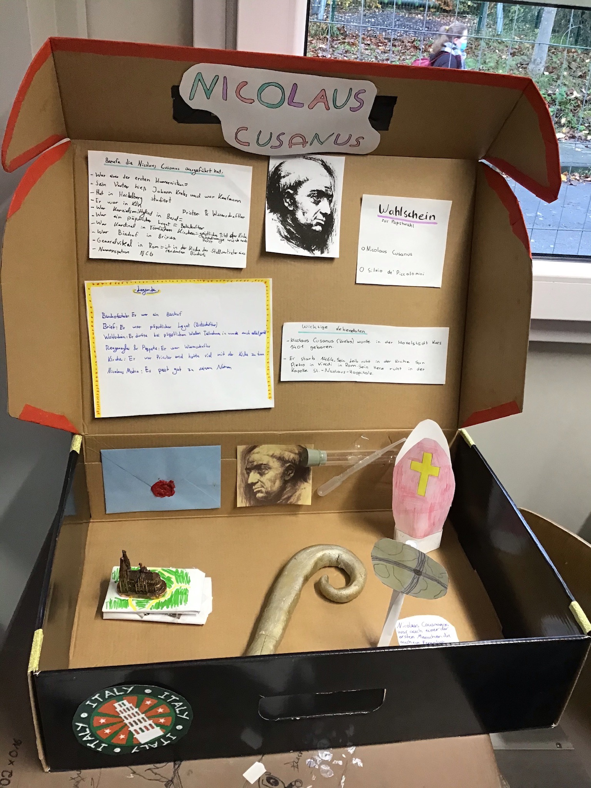

Nicolaus Cusanus, der Namensgeber unserer Schule, lebte von 1401 bis 1464 und war als christlicher Theologe einer der wichtigsten Denker des 15. Jahrhunderts. Diese Epoche nennt man heute Renaissance – eine Zeit des Aufbruchs, die viele Parallelen zu unserer modernen Welt aufweist.
Die Renaissance war geprägt vom Aufeinandertreffen der christlichen und islamischen Welt. 1453 fiel Konstantinopel an die Osmanen, während 1492 die Reconquista in Spanien endete.
Gleichzeitig profitierte Europa stark vom Wissen der islamischen Welt. Antike Schriften – etwa von Aristoteles – wurden wiederentdeckt und übersetzt. Auch Kunst und Architektur erlebten eine neue Blüte. Große Künstler wie Leonardo da Vinci, Michelangelo und Raffael wurden in dieser Zeit geboren.
Auch innerhalb der Kirche kam es zu Spannungen. Der Reformator Jan Hus kritisierte den Reichtum der Kirche und wurde 1415 hingerichtet. Seine Anhänger wurden danach verfolgt.
Große Entdeckungsreisen prägten die Zeit: Portugiesen erkundeten Afrika, und Christoph Kolumbus entdeckte 1492 Amerika.
Eine der wichtigsten Erfindungen war der Buchdruck durch Johannes Gutenberg. Dadurch konnten Ideen viel schneller verbreitet werden – ähnlich wie heute durch das Internet.
Nicolaus wurde 1401 in Kues geboren. Obwohl er kein Adliger war, gelang ihm eine außergewöhnliche Karriere bis zum Kardinal.
Er studierte in Heidelberg, Padua, Köln und Paris und wurde später Gesandter beim Konzil von Basel. Dort setzte er auf Dialog statt Gewalt und versuchte, Konflikte innerhalb der Kirche zu lösen.
Papst Eugen IV. beauftragte ihn mit wichtigen Missionen, unter anderem zur Wiedervereinigung der katholischen und orthodoxen Kirche. Diese Bemühungen hatten jedoch nur teilweise Erfolg.
Als päpstlicher Gesandter versuchte Nicolaus, Missstände in der Kirche zu beheben. Seine Reformideen stießen jedoch oft auf Widerstand.
Auch als Bischof von Brixen konnte er seine Pläne nicht vollständig umsetzen und wurde schließlich vertrieben.
Nicolaus war seiner Zeit weit voraus. Er beschäftigte sich mit Mathematik, Astronomie und Philosophie.
Er ging bereits von der Kugelgestalt der Erde aus und dachte über ein heliozentrisches Weltbild nach – lange bevor Galileo Galilei dies bewies.
Seine wichtigste philosophische Idee ist die „coincidentia oppositorum“ – der Gedanke, dass Gegensätze zusammenfallen können.
Nicolaus gründete das Cusanus-Stift, ein Altenheim mit für die Zeit sehr modernen sozialen Ideen.
Er setzte sich außerdem für den Dialog zwischen Religionen ein und schrieb über religiöse Toleranz.
Er starb 1464 in Italien. Sein Körper wurde in Rom beigesetzt, sein Herz befindet sich bis heute in seiner Heimat Bernkastel-Kues.